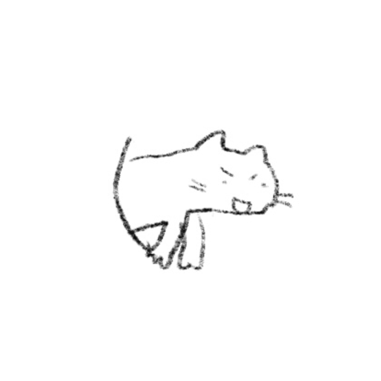

プロフィール
豊永明香里(とよなが あかり)
お茶の水女子大学 理学部 情報科学科 卒業
お茶の水女子大学 人間文化創成科学研究科 理学専攻情報科学コース 1年 (在学中)
このページについて
学部2年の授業の成果物であった自作サイトを、就職活動用自己紹介ページとして一時的に公開しています。個人情報保護的観点もありますし、何より恥ずかしいので、役目を果たし次第このサイトは予告なくアクセス不可能となる可能性があります。
大まかに
福岡生まれ神奈川育ち、神奈川在住。東京まで通うのがしんどい(片道2時間)ので世間のオンライン化に感謝しています。趣味は登山、イラスト、などなどです。興味を持ったらなんでもやってみるタイプです。
この辺りに専攻関係の成果物などを載せられたらいいなと思っています。